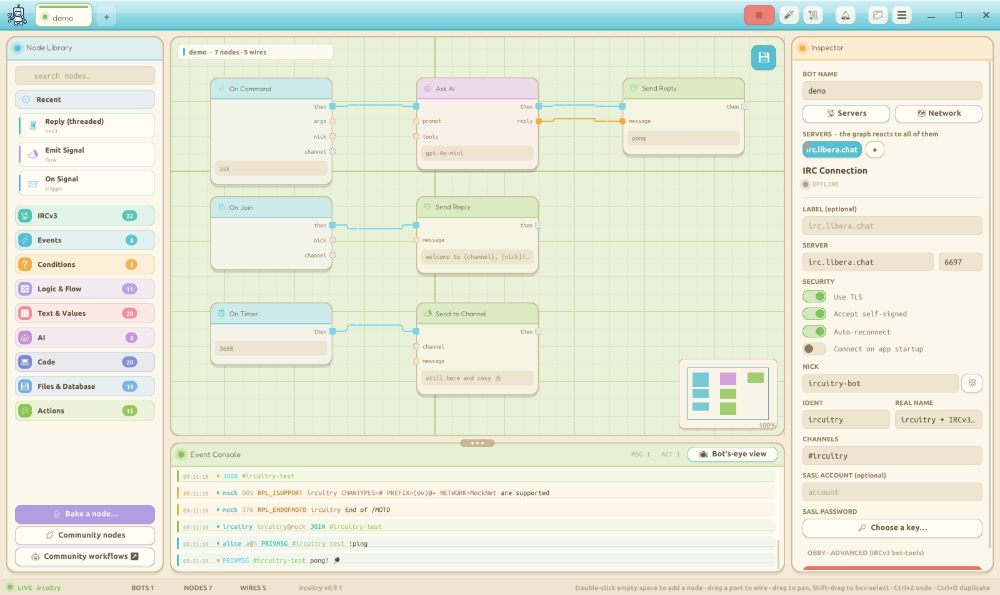

ircuitry is a cozy desktop app for building real IRCv3 bots on a visual node-graph canvas. Wire up triggers, filters and actions, point it at a server, and press RUN. No code required, but there is a Code node for when you want it.
Free and open source (GPLv3). Self-contained, no install needed.

A from-scratch IRCv3 client, a visual editor, and a runtime, drawn entirely by hand.
Drag trigger, filter and action nodes onto the canvas and wire them together. Exec flow plus typed data pins.
TLS, CAP negotiation, SASL, message tags, reactions and threaded replies. A genuine client, not a wrapper.
Ask AI, tools and memory over the OpenAI-compatible protocol, plus a sandboxed Programmer AI that reads, edits and delivers a whole codebase.
Each tab is its own bot, connection and runtime. Auto-reconnect, rate limiting and a full run history.
Deconstructible recipes of built-in nodes - drop one in and right-click Edit to see exactly how it works.
An AI assistant can introspect, build, validate and dry-run your bots through a standard MCP server.
Ready-made nodes (weather, dice, hashes, web lookups) and whole workflows (games, reminders, quizzes). Copy one and paste it straight into ircuitry.